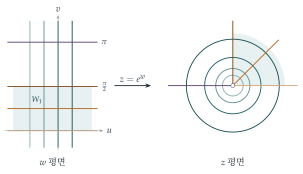

STEP II 1997, 문제 5
계속 읽기 전에 문제를 먼저 읽어 보자. 문제는 STEP Support Programme의 문제 데이터베이스에 있다: step.maths.org/questions/97-s2-q5
도입
지수함수(exponential function)는 \(y = e^x\)라는 곡선으로 익숙할 것이다. 그러나 복소변수(complex variable) 함수는 곡선으로 그릴 수 없다. 입력이 평면 위의 점이고 출력도 평면 위의 점이기 때문이다. 이런 함수는 사상(map)으로 그려 보는 것이 좋다. 사상이란 한 평면의 모든 점을 다른 평면의 점으로 옮기는 변환(transformation)으로, 그 과정에서 평면을 늘이고 구부린다.
문제의 식은 \(z = e^{u}(\cos v + \mathrm{i}\sin v) = e^{u + \mathrm{i}v} = e^w\)이다. 사상으로 보면 복소 지수함수는 놀라운 일을 한다. 평면의 가로 띠 하나를 말아서 (원점을 뺀) 평면 전체로 만들고, 세로 직선은 원으로 감고 가로 직선은 반직선으로 펼친다. 그리고 빙 둘러 감기 때문에 일대일(one-to-one)이 아니다. 각 점으로 무한히 많은 점이 옮겨 간다. 이것이 복소로그(complex logarithm)가 “다가(multi-valued)”인 이유이며, 복소해석학(complex analysis)에서 처음 만나는 놀라움 가운데 하나이다.
시작하기 전에
\(z = e^u(\cos v + \mathrm{i}\sin v)\)의 절댓값(modulus)과 편각(argument)을 \(u\)와 \(v\)로 나타내면 무엇인가?
\(|z| = e^u\)이고 \(\arg z = v\)이다(\(2\pi\)의 배수 차이는 무시한다). 따라서 \(w\)의 실수부 \(u\)는 원점으로부터의 거리를 지수적으로 조절하고, 허수부 \(v\)는 방향을 조절한다. 이 관찰 하나로 문제의 거의 모든 부분이 풀린다.
차근차근 풀기
단계 1 \(e^w = \mathrm{i}e\) 풀기
\(\mathrm{i}e\)의 절댓값과 편각은 무엇인가?
\(|\mathrm{i}e| = e\)이고 \(\arg(\mathrm{i}e) = \frac\pi2\)이다. 따라서 \(e^u = e\)이어야 하므로 \(u = 1\)이고, 임의의 정수 \(k\)에 대하여 \(v = \frac\pi2 + 2k\pi\)이다. 해는 \[w = 1 + \mathrm{i}\left(\tfrac\pi2 + 2k\pi\right), \qquad k \in \mathbb{Z}.\] 이다. 해는 무한히 많고, 세로 방향으로 \(2\pi\) 간격으로 놓여 있다.
단계 2 격자선의 상
세로 직선 \(u = c\) 위에서는 \(v\)가 변하는 동안 \(|z| = e^c\)가 고정된다. 따라서 상은 원점을 중심으로 하고 반지름이 \(e^c\)인 원이며, \(v\)가 모든 실수를 지나는 동안 이 원을 무한히 여러 번 돈다.
가로 직선 \(v = d\) 위에서는 \(\arg z = d\)가 고정되고 \(|z| = e^u\)는 모든 양의 값을 가진다. 따라서 상은 원점에서 각 \(d\) 방향으로 뻗은 열린 반직선(ray)이며, 원점 자체는 포함하지 않는다. 직선 \(v = d\)와 \(v = d + 2\pi\)는 같은 반직선을 준다.

단계 3 일대일 대응인 조각
어떤 점 \(w\)가 제1사분면 \(x > 0\), \(y > 0\)으로 옮겨 가는가? 그 집합이 사분면과 일대일 대응을 이루기에는 너무 큰 이유는 무엇인가?
\(z\)가 열린 제1사분면에 있을 필요충분조건은 절댓값과 상관없이 \(\arg z\)가 (\(2\pi\)를 법으로 하여) \(0\)과 \(\frac\pi2\) 사이에 엄격하게 있는 것이다. 따라서 \(w\)는 \(0 < v < \frac\pi2\) 또는 \(2\pi < v < \frac{5\pi}{2}\) 또는 …를 만족해야 한다. 즉 무한히 많은 가로 띠이며, 각 띠는 사분면 전체 위로 옮겨 간다. 띠 하나 안에서는 \(u\)와 \(v\)가 \(|z|\)와 \(\arg z\)에 의해 유일하게 정해지므로, 어느 띠 하나든 사분면과 일대일 대응을 이룬다. 따라서 다음과 같이 잡을 수 있다. \[W_1 = \{u + \mathrm{i}v : 0 < v < \tfrac\pi2\}, \qquad W_2 = \{u + \mathrm{i}v : 2\pi < v < \tfrac{5\pi}{2}\}.\]
이번에는 구멍 뚫린 원판(punctured disc) \(0 < |z| < 1\)과 일대일 대응을 이루는 \(w\) 평면의 집합 두 개를 찾아라.
\(|z| < 1\)은 \(e^u < 1\), 즉 \(u < 0\)을 뜻한다. 또 모든 편각이 정확히 한 번씩 덮여야 하므로, \(v\)는 길이가 정확히 \(2\pi\)이고 한쪽 끝은 포함하되 다른 쪽 끝은 포함하지 않는 구간 위를 움직여야 한다. 예를 들면 다음과 같다. \[W_3 = \{u + \mathrm{i}v : u < 0,\ 0 \leq v < 2\pi\}, \qquad W_4 = \{u + \mathrm{i}v : u < 0,\ -\pi < v \leq \pi\}.\] 이들은 한쪽 경계는 포함하고 다른 쪽 경계는 제외한 반쪽 띠이다. (두 경계를 모두 포함하면 양의 실수축 위의 점이 두 번 대응되고, 둘 다 제외하면 빠지게 된다.)■
돌아보기
절댓값과 편각이 변수를 분리한다. \(|e^w| = e^{\mathrm{Re}\,w}\)이고 \(\arg e^w = \mathrm{Im}\,w\)이므로, \(w\)의 실수부와 허수부가 거리와 방향을 각각 독립적으로 조절한다.
복소함수를 사상으로 그려 보라. 격자선이 어디로 가는지 따라가면, 그래프로 그릴 수 없는 함수도 분명하게 그려 볼 수 있다.
주기성(periodicity)은 단사성(injectivity)을 깨뜨린다. \(e^{w + 2\pi\mathrm{i}} = e^w\)이므로 이 사상은 다대일이며, 역함수를 가지려면 높이가 \(2\pi\)인 띠로 제한해야 한다.
숨은 수학
실수 직선에서 \(\ln\)은 \(\exp\)의 역함수이다. 복소평면에서는 \(z \neq 0\)인 각 \(z\)에 대하여 \(e^w = z\)의 해 \(w\)가 무한히 많고, 이 해들은 \(2\pi\mathrm{i}\)의 배수만큼 차이 나므로 “\(\log z\)”는 하나의 수가 아니다. 진짜 함수를 얻으려면 분지(branch)를 골라야 하는데, 이는 \(W_3\)이나 \(W_4\) 같은 띠를 고른다는 뜻이다. 주분지(principal branch)는 \(-\pi < \arg z \leq \pi\)로 잡는다. 모든 분지는 원점에서 뻗은 어떤 반직선을 따라 값이 뛰는데, 이 반직선을 분지 절단(branch cut)이라 한다. 리만(Bernhard Riemann)은 1851년 학위 논문에서 로그가 평면 위에 산다는 고집을 버리는 것으로 이 문제를 해결했다. 로그는 무한한 나선 계단, 곧 리만 곡면(Riemann surface) 위에 살며, 그 위에서는 일가이고 매끄럽다. 오늘날 리만 곡면은 기하학, 정수론(number theory), 끈 이론(string theory)의 중심에 있다.
각이 보존된다
그림 5.7.1을 다시 보자. 세로 격자선과 가로 격자선은 직각으로 만나고, 이들이 옮겨 간 원과 반직선도 직각으로 만난다. 이는 우연이 아니다. 복소함수는 도함수가 0이 아닌 곳이면 어디서나 곡선 사이의 각을 보존한다. 이런 사상을 등각(conformal) 사상이라 한다. 국소적으로 등각 사상은 회전과 확대·축소일 뿐인데, 이는 바로 복소수 \(f'(z)\)를 곱하는 일이 하는 것이다. 등각 사상은 복잡한 영역을 답이 알려진 단순한 영역으로 변환함으로써 유체 흐름, 정전기학, 열전도 문제를 푸는 데 쓰인다.
메르카토르 지도
이 절과 4.8 절을 잇는 놀라운 사실이 있다. 1569년 메르카토르(Gerardus Mercator)의 지도는 나침반 방위가 일정한 항로가 직선이 되도록 설계되었는데, 그러려면 각을 보존해야 한다. 지구를 먼저 (북극에서) 평면 위로 입체 사영(stereographic projection)한 다음 복소로그를 취하면, 그 결과가 정확히 메르카토르 도법이다. \(\log\) 아래에서 반직선과 원이 가로 직선과 세로 직선이 되는 것과 똑같이, 경선은 세로 직선이 되고 위선은 가로 직선이 된다. 이 절의 지수 사상을 거꾸로 돌리면 바로 항해사가 쓰는 해도의 수학이 된다.
사고 기술
함수를 그래프로 그릴 수 없을 때는 함수가 하는 일을 그려라. 단순한 곡선들의 격자를 따라가며 그 곡선들이 어디로 가는지 보라.
복소함수의 경우에는 가로 직선과 세로 직선, 또는 원과 반직선의 상이 보통 모든 것을 말해 준다. 사상이 도형에 무슨 일을 하는지 생각하는 이런 사고방식은 기하학과 해석학 전체에 걸쳐 흐른다.
더 도전하기
방정식 풀기. \(e^w = -1\)을 만족하는 모든 복소수 \(w\)와, \(e^w = 1 + \mathrm{i}\)를 만족하는 모든 \(w\)를 구하여라.
정사각형의 상. 꼭짓점이 \(0\), \(1\), \(1 + \mathrm{i}\), \(\mathrm{i}\)인 정사각형의 \(z = e^w\)에 의한 상을 구하고 그려라.
직각. 원 \(|z| = e^c\)와 반직선 \(\arg z = d\)가 직각으로 만남을 직접 보이고, 이것이 직선 \(u = c\)와 \(v = d\)가 수직이라는 사실과 어떻게 맞아떨어지는지 설명하여라.
제곱. \(c\)와 \(d\)를 0이 아닌 실수라 하자. 사상 \(z \mapsto z^2\)에 의한 직선 \(x = c\)와 \(y = d\)의 상을 구하여라. 그 상들이 포물선(parabola)이며, 만나는 곳에서는 언제나 직각으로 만남을 보여라. (\(c = 0\) 또는 \(d = 0\)이면 어떻게 되는가?)
더 읽을거리
Tristan Needham, Visual Complex Analysis (Oxford University Press). 제 2장과 제 4장에서 지수함수, 로그, 등각 사상을 훌륭한 그림과 함께 다룬다.
Hilary Priestley, Introduction to Complex Analysis (Oxford University Press). 명료한 대학 학부 첫 교재이다.
Ian Stewart & David Tall, Complex Analysis (Cambridge University Press). 기하학에 중점을 둔 또 하나의 훌륭한 학부 입문서이다.